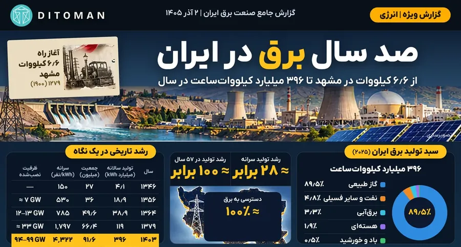
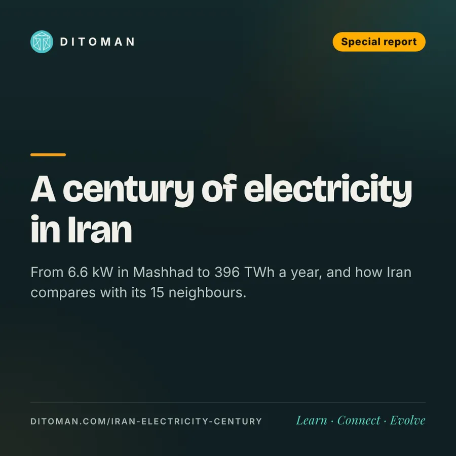
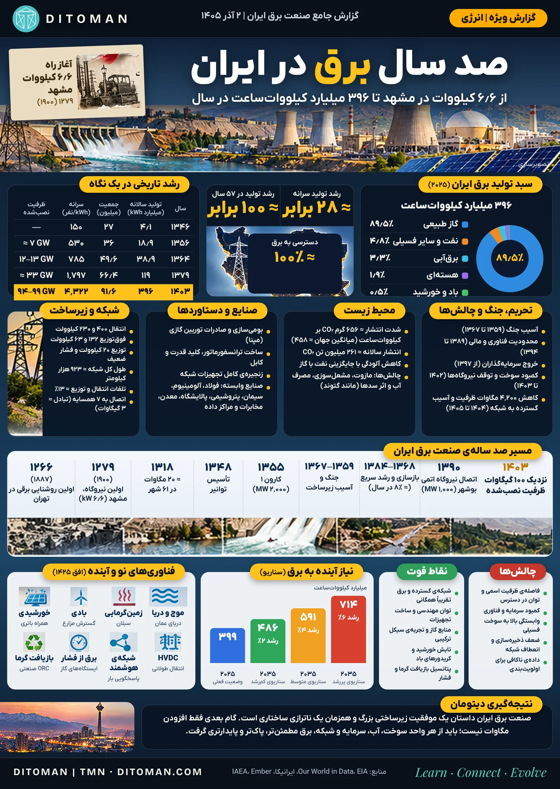

صد سال برق در ایران: از ۶٫۶ کیلووات در مشهد تا یکی از بزرگترین شبکههای منطقه
A century of electricity in Iran: from 6.6 kW in Mashhad to one of the region’s largest power systems
تاریخچه، ظرفیت، منابع تأمین، شبکه، تحریم، محیط زیست، آینده و مقایسه با ۱۵ همسایه در ۴۰ سال
History, capacity, supply sources, the grid, sanctions, the environment, the future, and 40 years compared with 15 neighbours
ایران در حدود یک قرن از چند مولد کوچک شهری به یکی از بزرگترین شبکههای برق منطقه رسید: نزدیک ۱۰۰ هزار مگاوات ظرفیت اسمی و دسترسی تقریباً همگانی. این گزارش تاریخچه، ظرفیت، منابع تأمین، شبکه، محیط زیست، مقایسه با ۱۵ همسایه و آینده را کنار هم میگذارد و آمار مشاهدهشده، برآورد و سناریو را از هم جدا میکند.

1. خلاصه در یک نگاه
| شاخص | ۱۳۴۶ (۱۹۶۷) | ۱۳۵۶ (۱۹۷۷) | ۱۳۶۴ (۱۹۸۵) | ۱۳۷۹ (۲۰۰۰) | ۱۴۰۳ (۲۰۲۴) |
|---|---|---|---|---|---|
| تولید سالانه (میلیارد کیلوواتساعت) | ۴٫۱ | ۱۸٫۹ | ۳۸٫۹ | ۱۱۹ | ۳۹۶ |
| جمعیت (میلیون نفر) | حدود ۲۷ | حدود ۳۶ | ۴۹٫۶ | ۶۶٫۴ | ۹۱٫۶ |
| تولید سرانه (کیلوواتساعت) | حدود ۱۵۰ | حدود ۵۳۰ | ۷۸۵ | ۱٬۷۹۷ | ۴٬۳۲۲ |
| ظرفیت نصبشده | — | حدود ۷ گیگاوات (۱۳۵۷) | حدود ۱۲ تا ۱۳ گیگاوات | حدود ۳۳ گیگاوات | حدود ۹۴ تا ۹۹ گیگاوات |
- در ۵۷ سال، تولید برق نزدیک ۱۰۰ برابر شد، در حالی که جمعیت حدود ۳٫۴ برابر شد. سهم هر ایرانی از برق حدود ۲۸ برابر شد
- تولید سرانهی ایران امروز (حدود ۴٬۳۰۰ کیلوواتساعت) از میانگین جهان (حدود ۳٬۹۰۰) و از ترکیه (حدود ۴٬۰۰۰) بیشتر است
- بانک جهانی دسترسی به برق در ایران را در ۲۰۲۴ نزدیک ۱۰۰ درصد گزارش کرده؛ مشترکان از ۳٫۴ میلیون در ۱۳۵۷ به ۳۵٫۷ میلیون حدود ۱۳۹۸ رسیدند و روستاهای برقدار از ۴٬۳۶۷ به بیش از ۵۷ هزار
- اما ظرفیت اسمی با توان قابل اتکا در ساعت اوج برابر نیست. در تابستان ۲۰۲۶ ظرفیت در دسترس حدود ۶۸٬۴۰۰ مگاوات و تقاضای اوج تا بیش از ۸۱ هزار مگاوات برآورد شد
منبع جدول: ایرانیکا (۱۳۴۶ و ۱۳۵۶)، Our World in Data بر پایهی Ember و Energy Institute (۱۹۸۵ به بعد). ظرفیتهای تاریخی از مجموعههای مختلف آمده و کاملاً یکسانسازی نشدهاند.
2. شروع: اولین برق ایران (۱۸۸۷ تا ۱۹۴۸)
«اولین استفاده»، «اولین نیروگاه» و «اولین عرضهی تجاری» سه رویداد جدا هستند:
- حدود ۱۲۶۶ (۱۸۸۷): اولین روشنایی برقی در ساختمانهای حکومتی تهران، دورهی ناصرالدینشاه
- ۱۲۷۹ (۱۹۰۰): اولین نیروگاه ایران در مشهد با ۶٫۶ کیلووات؛ دو سال بعد نیروگاه ۱۹ کیلوواتی دوم
- ۱۲۸۲ و ۱۲۸۴: رشت و تبریز (۹۳ کیلووات)
- تهران، امینالضرب: نیروگاه زغالسنگی حدود ۳۰۰ کیلووات. ایرانیکا ۱۲۸۷ (۱۹۰۸) نوشته و بسیاری از منابع فارسی حدود ۱۲۸۳. خیابان «چراغ برق» نامش را از همین نیروگاه دارد
- صنعت نفت خوزستان از پیشگامان برق صنعتی بود؛ تا ۱۲۹۹ همهی سایتهای نفتی برق داشتند
- ۱۳۱۸ (۱۹۳۹): ۱۴۹ نیروگاه در ۶۱ شهر، بیشتر دیزلی؛ ظرفیت کل حدود ۲۰ مگاوات (بدون تأسیسات نفت)
- ۱۳۲۷ (۱۹۴۸): حدود ۹۰ مگاوات و مصرف سرانه فقط ۱۲ کیلوواتساعت در سال
3. ساختن صنعت: ۱۳۲۰ تا ۱۳۵۷
| سال | رویداد |
|---|---|
| دههی ۱۳۰۰ و ۱۳۱۰ | اولین نیروگاههای آبی کوچک؛ برق ۲۴ ساعتهی تهران از ۱۳۱۳ |
| ۱۳۴۰ (حدود) | سد امیرکبیر (کرج) |
| ۱۳۴۲ | سد دز (۵۲۰ مگاوات) و تشکیل سازمان برق ایران |
| ۱۳۴۳ تا ۱۳۴۴ | وزارت آب و برق؛ ملی شدن صنعت برق |
| ۱۳۴۸ | تأسیس توانیر برای تولید و انتقال سراسری |
| ۱۳۵۲ | آغاز شبکهی ۴۰۰ کیلوولت؛ تأسیس سازمان انرژی اتمی |
| ۱۳۵۳ | وزارت آب و برق «وزارت نیرو» شد |
| ۱۳۵۵ | سد کارون ۱ (شهید عباسپور، ۲٬۰۰۰ مگاوات) |
| ۱۳۵۷ | ظرفیت حدود ۷٬۰۰۰ مگاوات؛ ساخت بوشهر و اهواز اتمی نیمهکاره ماند |
در ۱۳۴۵ فقط ۴ درصد خانوارهای روستایی برق داشتند. تولید در ده سال (۱۳۴۶ تا ۱۳۵۶) بیش از چهار برابر شد.
4. جنگ، بازسازی و جهش (۱۳۵۷ تا ۱۳۹۲)
- ۱۳۵۹ تا ۱۳۶۷، جنگ: زیرساخت آسیب دید و پروژهها متوقف شد، اما تعمیر و بهرهبرداری ادامه یافت. ظرفیت چند سال تقریباً ثابت ماند و ظرفیت سرانه در ۱۳۶۱ برای اولین بار افت کرد. در ۱۳۶۳: ۱۳٬۰۰۰ مگاوات، با بخاری ۵۰٪، گازی ۲۴٪، آبی ۱۶٪ تولید
- ۱۳۶۸ تا ۱۳۸۴، بازسازی و پرشتابترین دوره: تولید سالانه حدود ۸٪ رشد کرد. رکورد رشد سالانه در ۱۳۶۹ (۱۲٫۱٪) و ۱۳۷۲ (۱۱٫۲٪) ثبت شد. برقرسانی روستایی، اولین مزرعهی بادی (منجیل، ۱۳۷۳) و جایگزینی نفت با گاز
- ۱۳۸۰ تا ۱۳۹۲، دورهی سدها و سیکل ترکیبی: مسجدسلیمان (۲٬۰۰۰ مگاوات)، کارون ۳ (۲٬۲۸۰)، کارون ۴ (۱٬۰۲۰)، گتوند، نکا سیکل ترکیبی (۲٬۲۱۴)، سیاهبیشه اولین تلمبهذخیرهای (۱٬۰۴۰) و نیروگاه اتمی بوشهر (۱٬۰۰۰ مگاوات؛ اتصال ۱۳۹۰، تجاری ۱۳۹۲)
رشد نسبت به جمعیت (میانگین سالانه):
| دهه | رشد تولید | رشد سرانه |
|---|---|---|
| ۱۹۸۵ تا ۱۹۹۵ | ۸٫۰٪ | ۵٫۶٪ |
| ۱۹۹۵ تا ۲۰۰۵ | ۷٫۷٪ | ۶٫۲٪ (بهترین دهه) |
| ۲۰۰۵ تا ۲۰۱۵ | ۴٫۷٪ | ۳٫۲٪ |
| ۲۰۱۵ تا ۲۰۲۵ | ۳٫۵٪ | ۲٫۴٪ |
بهترین دورهی پیشرفت نسبت به جمعیت، دههی ۱۳۷۴ تا ۱۳۸۴ بود: سهم هر نفر از ۱٬۳۵۶ به ۲٬۴۶۵ کیلوواتساعت رسید.
5. منابع تأمین: از نفت به گاز
یکی از بزرگترین تحولات کمتر دیدهشده: ایران سوخت نیروگاهها را از نفت به گاز برد و نفت را برای صادرات آزاد کرد.
| سال | گاز | نفت | آبی | اتمی |
|---|---|---|---|---|
| ۱۹۸۵ | ۳۵٪ | ۴۹٪ | ۱۵٪ | ۰ |
| ۲۰۰۰ | ۶۸٪ | ۲۸٪ | ۳٪ | ۰ |
| ۲۰۱۳ | ۵۳٪ | ۳۹٪ | ۶٪ | ۲٪ |
| ۲۰۲۴ | ۸۶٪ | ۷٪ | ۵٪ | ۲٪ |
سبد تولید ۲۰۲۵ (حدود ۳۹۶ میلیارد کیلوواتساعت):
| منبع | تولید (میلیارد کیلوواتساعت) | سهم |
|---|---|---|
| گاز طبیعی | ۳۵۴٫۴ | ۸۹٫۵٪ |
| نفت و سایر فسیلی | ۱۸٫۸ | ۴٫۸٪ |
| برقآبی | ۱۳٫۰ | ۳٫۳٪ |
| هستهای (بوشهر) | ۷٫۴ | ۱٫۹٪ |
| باد و خورشید | ۲٫۲ | ۰٫۵٪ |
- سیکل ترکیبی منبع انرژی نیست، فناوری است: گرمای خروجی توربین گاز را دوباره برق میکند و راندمان را در طراحیهای مدرن به ۵۵ تا ۶۲ درصد میرساند؛ توربین گازی تنها حدود ۳۰ درصد
- سدها در سالهای پرآب تا ۱۷٪ برق را دادهاند (۱۹۸۸) و در خشکسالی به ۳ تا ۴٪ افتادهاند. در نیمهی اول ۱۴۰۴ تولید آبی حدود ۴۰٪ کم شد
- خورشید و باد: ظرفیت اعلامی از حدود ۱٬۱۰۰ تا ۲٬۷۰۰ مگاوات (بسته به منبع و تاریخ)؛ هدف ۷٬۰۰۰ مگاوات تا اسفند ۱۴۰۴ محقق نشد
- ظرفیت کل: حدود ۹۴ گیگاوات در ۲۰۲۴ و رقم ۹۸٬۸۰۲ مگاوات در گزارش بعدی Tehran Times
6. جغرافیای برق و شبکه
- خوزستان: قطب برق آبی و حرارتی (کارون ۱ تا ۴، دز، گتوند، مسجدسلیمان، رامین)
- تهران، البرز و قزوین: بزرگترین مرکز تقاضا و نیروگاههای دماوند و شهید رجایی
- شمال: نکا؛ شمالغرب: مزارع بادی منجیل؛ بوشهر: تنها نیروگاه اتمی؛ جنوب: بندرعباس و نیروگاههای نزدیک میدانهای گاز؛ مرکز و شرق: کرمان، رودشور و بهترین تابش خورشید
ساختار شبکه: تولید ← ترانس افزاینده ← انتقال ۴۰۰ و ۲۳۰ کیلوولت ← فوقتوزیع ۱۳۲ و ۶۳ کیلوولت ← توزیع ۲۰ کیلوولت و فشار ضعیف. دیسپاچینگ، پستها، SCADA و مخابرات صنعتی ستون فقرات این شبکهاند.
| ۱۳۴۶ | ۱۳۵۷ | ۱۳۶۳ | حدود ۱۳۹۸ | |
|---|---|---|---|---|
| شبکهی ۴۰۰ کیلوولت | — | تازه آغاز | بیش از ۴٬۳۰۰ کیلومتر | — |
| خطوط ۶۳ تا ۲۳۰ کیلوولت | ۱٬۸۰۰ کیلومتر | — | ۲۴٬۶۰۰ کیلومتر | — |
| کل شبکه تا توزیع | — | ۸۱٬۷۷۵ کیلومتر | — | ۹۲۳٬۴۵۲ کیلومتر |
- تلفات: حدود ۱۳٪ در انتقال و توزیع
- همسایهها: اتصال به ترکیه، ارمنستان، آذربایجان، ترکمنستان، عراق، افغانستان و پاکستان با ظرفیت تبادل حدود ۳ گیگاوات. ایران در ۲۰۱۳ حدود ۸ میلیارد کیلوواتساعت صادرات خالص داشت و سالها حدود یکسوم برق عراق را تأمین میکرد؛ در مرداد ۱۴۰۴ صادرات به عراق متوقف شد
7. ساخت داخل و صنایع وابسته
- زنجیرهی ارزش: توربین و ژنراتور، بویلر، ترانسفورماتور، کلید قدرت، کابل، مقره، رله، کنتور هوشمند، اینورتر و نرمافزار دیسپاچینگ
- نامهای شناختهشده: مپنا (بومیسازی توربین V94.2 با لیسانس زیمنس به نام MGT-70، سپس MGT-75، و صادرات توربین به روسیه در ۲۰۲۵)، ایرانترانسفو و پارس سوئیچ
- صنایع وابسته به برق پایدار: فولاد (مبارکه بهتنهایی حدود ۱٬۴۰۰ مگاوات)، آلومینیوم، سیمان، پتروشیمی، پالایشگاه، معدن، آب و فاضلاب، مخابرات و مراکز داده
- خودکفایی در ساخت تجهیز به معنای استقلال کامل از قطعات دقیق، مواد خاص و نرمافزار نیست. هزینهی خاموشی صنایع را هم باید با ارزش افزودهی ازدسترفته سنجید، نه فقط کیلوواتساعت قطعشده
8. تحریم و جنگ: هر دوره چه کرد؟
| دوره | اثر |
|---|---|
| ۱۳۵۹ تا ۱۳۶۷ | آسیب جنگ، توقف پروژهی اتمی، رکود ظرفیت |
| دههی ۱۳۷۰ و ۱۳۸۰ | فشار تأمین مالی، اما بومیسازی توربین و جهش ظرفیت |
| ۱۳۸۹ تا ۱۳۹۴ | محدودیت فناوری و مالی؛ بوشهر با روسیه تکمیل شد |
| ۱۳۹۴ تا ۱۳۹۷ | قرارداد زیمنس و مپنا و جذب سرمایهگذار خورشیدی خارجی |
| از ۱۳۹۷ | خروج سرمایهگذاران (از جمله طرح ۵۷۰ میلیون دلاری Quercus)، کمبود ارز برای قطعه |
| ۱۴۰۲ تا ۱۴۰۴ | به گفتهی EIA در ۲۰۲۳ تقاضای اوج حدود ۱۲ گیگاوات بیش از عرضه بود و ظرفیت عملیاتی کمتر از ۷۸٪ ظرفیت نصبشده؛ دی ۱۴۰۳ حدود ۸۰ نیروگاه بهخاطر کمبود سوخت متوقف شدند |
| جنگ ۱۴۰۴ و ۱۴۰۵ | ۴٬۲۰۰ مگاوات کاهش ظرفیت و آسیب به بیش از ۲٬۰۰۰ نقطهی شبکه (مدیرعامل توانیر)؛ حمله به پارس جنوبی در اسفند ۱۴۰۴ |
سهم دقیق تحریم از کمبود برق را بدون مدل خلافواقع نمیشود تعیین کرد. عوامل داخلی هم مهماند: تعرفهی کمتر از هزینهی واقعی (حدود ۳۰ میلیارد دلار یارانهی برق در ۲۰۲۳)، تأخیر سرمایهگذاری، رشد مصرف سرمایشی، تلفات و ضعف مدیریت تقاضا. در مقابل، تحریم توان تعمیر و ساخت داخل را هم بالا برد.
وضعیت امروز (آذر ۱۴۰۵): از ۱ آذر خاموشی خانگی تا ۲ ساعت یک روز در میان شروع شده. دولت کسری گاز زمستان را تا ۴۳۰ میلیون متر مکعب در روز برآورد کرده و حدود ۱۳۰ میلیون متر مکعب ظرفیت فرآورش آسیبدیده ممکن است تا ۲۰۲۸ برنگردد.
9. ایران و ۱۵ همسایه: ۴۰ سال در یک جدول
همسایههای ایران: ۷ همسایهی خشکی (عراق، ترکیه، ارمنستان، آذربایجان، ترکمنستان، افغانستان، پاکستان) و ۸ همسایهی آبی در خلیج فارس، دریای عمان و خزر (کویت، عربستان، بحرین، قطر، امارات، عمان، قزاقستان، روسیه).
| کشور | تولید ۱۹۸۵ | تولید آخرین سال | چند برابر | سرانهی آخرین سال (کیلوواتساعت) | سهم کمکربن |
|---|---|---|---|---|---|
| روسیه | ۹۶۲ | ۱٬۱۹۳ | ۱٫۲ | ۸٬۲۸۳ | ۳۶٪ |
| عربستان | ۵۲ | ۴۵۵ | ۸٫۸ | ۱۳٬۳۸۶ | ۲٪ |
| ایران | ۳۹ | ۳۹۶ | ۱۰٫۲ | ۴٬۲۸۳ | ۶٪ |
| ترکیه | ۳۴ | ۳۵۴ | ۱۰٫۳ | ۴٬۰۳۶ | ۴۳٪ |
| پاکستان | ۲۹ | ۱۹۵ | ۶٫۸ | ۷۶۴ | ۵۵٪ |
| امارات | ۱۲ | ۱۷۷ | ۱۴٫۵ | ۱۶٬۰۷۵ | ۳۲٪ |
| عراق | ۲۱ | ۱۵۰ | ۷٫۱ | ۳٬۲۵۲ | ۲٪ |
| قزاقستان | ۸۱ | ۱۲۴ | ۱٫۵ | ۵٬۹۳۴ | ۱۵٪ |
| کویت | ۱۵ | ۹۳ | ۶٫۰ | ۱۸٬۴۰۲ | ۲٪ |
| قطر | ۴ | ۵۶ | ۱۴٫۱ | ۱۸٬۰۳۰ | ۴٪ |
| عمان | ۳ | ۵۳ | ۱۸٫۲ | ۹٬۶۱۷ | ۵٪ |
| بحرین | ۱۴ (۲۰۰۰) | ۳۸ | — | ۲۳٬۶۱۵ | ۰٪ |
| ترکمنستان | ۱۱ | ۳۳ | ۳٫۰ | ۴٬۴۰۵ | ۰٪ |
| آذربایجان | ۲۱ | ۲۸ | ۱٫۴ | ۲٬۷۰۲ | ۱۲٪ |
| ارمنستان | ۶ (۲۰۰۰) | ۱۰ | — | ۳٬۲۹۲ | ۶۶٪ |
| افغانستان | ۰٫۵ (۲۰۰۰) | ۱ | — | ۲۳ | ۸۷٪ |
تولید به میلیارد کیلوواتساعت؛ آخرین سال ۲۰۲۵ یا ۲۰۲۴. منبع: Our World in Data (Ember و Energy Institute). برای ارمنستان، آذربایجان، ترکمنستان و قزاقستان، ۱۹۸۵ دورهی شوروی است.
آنچه این جدول نشان میدهد:
- ایران سومین تولیدکنندهی برق در میان این ۱۶ کشور است، بعد از روسیه و عربستان، و از ترکیه جلوتر. برق ایران از مجموع هشت همسایهی کویت، قطر، عمان، بحرین، ترکمنستان، آذربایجان، ارمنستان و افغانستان بیشتر است
- ایران و ترکیه با رشد حدود ۱۰ برابری در ۴۰ سال، همپای هم پیش آمدهاند؛ آن هم ایران زیر جنگ هشتساله و تحریم. تولید سرانهی ایران هنوز از ترکیه بیشتر است
- کشورهای حوزهی شوروی (روسیه، قزاقستان، آذربایجان) در این ۴۰ سال کمتر از ۱٫۵ برابر رشد کردند؛ ایران ۱۰ برابر
- کشورهای کوچک نفتی خلیج فارس سرانهی خیلی بالاتری دارند، چون جمعیت کم، درآمد نفتی بالا و صنایع انرژیبر دارند؛ مقایسهی منصفانهتر ایران با کشورهای پرجمعیت منطقه (ترکیه، پاکستان، عراق) است
- جایی که ایران عقب مانده، تنوع منابع است: ترکیه ۴۳٪ برق کمکربن دارد (۲۲٪ خورشید و باد)، پاکستان ۵۵٪، امارات با نیروگاه اتمی براکه ۲۳٪ اتمی و ۹٪ خورشیدی؛ ایران حدود ۶٪
10. محیط زیست: هزینهها و سودها
- شدت انتشار: حدود ۶۵۶ تا ۶۶۰ گرم CO₂ برای هر کیلوواتساعت در ۲۰۲۵ (میانگین جهان حدود ۴۵۸). ضرب در حدود ۳۹۶ میلیارد کیلوواتساعت یعنی تقریباً ۲۶۱ میلیون تن CO₂ در سال؛ این محاسبهی ماست، نه موجودی رسمی انتشار
- تحول مثبت: جایگزینی نفت با گاز (از ۴۹٪ به زیر ۷٪) آلودگی و انتشار را نسبت به حالت نفتی کم کرد
- مازوت: در کمبود گاز زمستانی، مازوت سوزانده میشود و SO₂، NOx و ذرات معلق تولید میکند. مقامهای تهران مرگ حدود ۶ هزار نفر در یک سال را به آلودگی هوا (از همهی منابع) نسبت دادهاند
- گاز هم بیهزینه نیست: CO₂ و خطر نشت متان در زنجیرهی تأمین؛ ایران سالانه حدود ۱۷ تا ۱۸ میلیارد متر مکعب گاز مشعلسوزی میکند
- سدها: کمکربناند اما جریان رود، رسوب، تالاب و زیستگاه را تغییر میدهند و تبخیر دارند؛ گتوند با مخزن روی لایههای نمک، شوری کارون را بالا برد
- آب: نیروگاههای حرارتی بسته به نوع خنککاری آب مصرف میکنند؛ خورشید و باد زمین، مواد معدنی و بازیافت پنل لازم دارند
- سود: برقرسانی همگانی به سلامت، آموزش، آبرسانی، صنعت و رفاه اجتماعی کمک بزرگی کرد
11. فناوریهای آینده: کدام واقعیتر است؟
- ارتقای راندمان نیروگاههای موجود: تبدیل توربینهای گازی به سیکل ترکیبی، توربین با دمای بالاتر، پایش وضعیت و تعمیرات پیشبینانه. نزدیکترین و ارزانترین راه
- خورشید با باتری: ایران از بهترین تابشهای دنیا را دارد. ۲۰ گیگاوات خورشیدی با ضریب ظرفیت ۲۰٪ حدود ۳۵ میلیارد کیلوواتساعت در سال میدهد، اما جای ۲۰ گیگاوات ظرفیت قابل اتکا در شب را نمیگیرد. اینورترهای grid-forming و باتری لیتیومآهنفسفات برای چند ساعت ذخیره، مکمل لازماند
- شبکه: HVDC برای انتقال طولانی، STATCOM و FACTS برای پایداری ولتاژ، هادیهای HTLS و رتبهبندی دینامیک خط برای ظرفیت بیشتر خطوط موجود، پست دیجیتال، PMU و شبکهی خودترمیم. شبکهی هوشمند فقط کنتور هوشمند نیست: پاسخگویی بار، نیروگاه مجازی و تعرفهی زمانمند هم هست
- بازیافت گرما و فشار: چرخهی آلی رانکین (ORC) برای گرمای تلفشدهی سیمان، فولاد و پالایشگاه؛ توربین انبساطی در ایستگاههای کاهش فشار گاز
- زمینگرمایی: سبلان و مشگینشهر سابقهی مطالعه دارند؛ ظرفیت تجاری فقط با آزمون چاه تأیید میشود
- دریا: دریای عمان برای ارزیابی انرژی موج اولویت پژوهشی بیشتری از بیشتر خلیج فارس دارد؛ اما فناوری موج، جزرومد و OTEC هنوز در مرحلهی پایلوتاند
- اتمی: قرارداد شهریور ۱۴۰۴ با روسیه برای چهار نیروگاه (۲۵ میلیارد دلار)؛ اجرا هنوز ثابت نشده
12. آینده: چقدر برق لازم است؟ (سناریو، نه پیشبینی)
با مبنای حدود ۳۹۹ میلیارد کیلوواتساعت در ۲۰۲۵:
| سناریو | نیاز ۲۰۳۵ (میلیارد کیلوواتساعت) | معنا |
|---|---|---|
| رشد ۲٪ در سال | ۴۸۶ | بهرهوری بهتر و رشد کنترلشده |
| رشد ۴٪ | ۵۹۱ | رشد متوسط تقاضا |
| رشد ۶٪ | ۷۱۴ | فشار شدید بر تولید، شبکه و سوخت |
این اعداد محاسبهی سادهی سناریو است و اثر بهرهوری، رشد اقتصادی و محدودیت عرضه را جدا مدل نمیکند.
نقشهی راه پیشنهادی ۱۴۰۵ تا ۱۴۲۵:
- کوتاهمدت (۱ تا ۳ سال): ممیزی توان قابل اتکا، تعمیرات بحرانی، رفع گلوگاه سوخت، کاهش تلفات، پاسخگویی بار، خورشیدی نزدیک مصرف
- میانمدت (۳ تا ۸ سال): سیکل ترکیبی، تقویت پست و انتقال، ذخیرهسازی، بازار خدمات جانبی، بازیافت گرمای صنعتی
- بلندمدت (۸ تا ۲۰ سال): تنوع کمکربن، HVDC در کریدورهای توجیهدار، زمینگرمایی پس از اثبات منبع، پایلوت دریایی
معیار انتخاب پروژه باید پنج چیز یکسان باشد: هزینهی برق قابل اتکا، زمان اجرا، مصرف آب و انتشار، وابستگی ارزی و فناوری، و ارزش برای پایداری شبکه.
13. نگاه دیتومان
| نقاط قوت | چالشها |
|---|---|
| شبکهی گسترده و برق تقریباً همگانی | فاصلهی ظرفیت اسمی و توان در دسترس |
| توان مهندسی و ساخت تجهیزات | کمبود سرمایه و دشواری تأمین فناوری |
| منابع گاز و تجربهی سیکل ترکیبی | وابستگی بالا به سوخت فسیلی |
| تابش خورشید و کریدورهای باد | ضعف ذخیرهسازی و انعطاف شبکه |
| پتانسیل بازیافت گرما و فشار | دادهی ناکافی برای اولویتبندی پروژهها |
صنعت برق ایران هم داستان یک موفقیت زیرساختی بزرگ است و هم داستان یک ناترازی ساختاری. نسلهایی از مهندسان، کارگران و تکنسینها، زیر جنگ و تحریم، برق را از ۶٫۶ کیلووات در مشهد به نزدیک ۱۰۰ هزار مگاوات و به تقریباً همهی روستاهای کشور رساندند. گام بعدی فقط افزودن مگاوات نیست؛ باید از هر واحد سوخت، آب، سرمایه و شبکه برق مطمئنتری گرفت. همسایهها نشان دادهاند که این راه، با خورشید، راندمان و مدیریت مصرف، شدنی است.
این گزارش آمار مشاهدهشده، برآورد و سناریو را از هم جدا کرده است. برخی ارقام از منابع رسمی ایران و برخی از تحلیلگران خارجی است و گاهی اختلاف دارند. آمار رسمی ۱۴۰۴ و ۱۴۰۵ و ظرفیت استانبهاستان بهطور کامل منتشر نشده. این گزارش آموزشی است، نه توصیهی سرمایهگذاری.
بیشتر بخوانید
منابع
- Encyclopaedia Iranica: BARQ i. In Iran
- Our World in Data: energy dataset (Ember, Energy Institute)
- IAEA: Iran country nuclear power profile (generation 2000–2020)
- US EIA: Iran country analysis
- Wikipedia: List of power stations in Iran
- Wikipedia: Iranian energy crisis
- Asia Times: Why Iran can’t keep the lights on (2025)
- Iran Open Data: clean energy output decline
- Arman Eghtesadi: Iran power industry in 40 years
- S&P Global: Iran halts power exports to Iraq (Aug 2025)
- Calcalist: Iran’s summer 2026 power deficit
- Al Jazeera: Iran braces for winter gas shortages (Nov 2026)
- The National: Iran imposes power cuts (Nov 2026)
- Al-Monitor: consequences of bombing Iran’s power stations (Apr 2026)
- Carbon Brief: profile of Iran
- IEA: Modernising grids in the age of electricity (2026)
آخرین بازبینی: ۲ آذر ۱۴۰۵. آمار مشاهدهشده، برآورد و سناریو از هم جدا شدهاند. آمار رسمی ۱۴۰۴ و ۱۴۰۵ و ظرفیت استانبهاستان کامل منتشر نشده و برخی ارقام در منابع مختلف اختلاف دارند. این گزارش آموزشی است، نه توصیهی سرمایهگذاری.